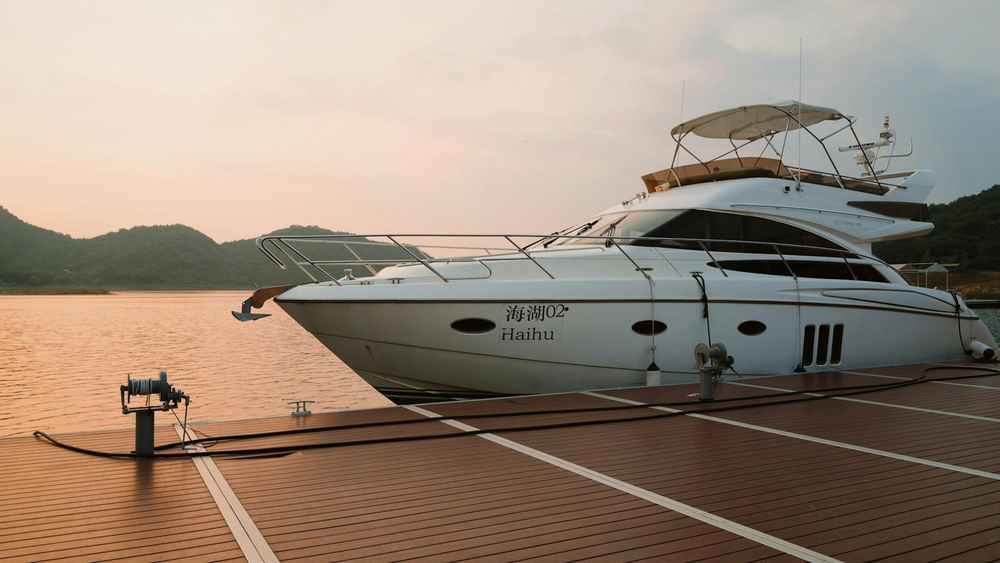
Haftalık
- Tatlı su basınçlı yıkama
- Güverte ve gövde
- Cam ve krom silme
- Sintine kontrolü
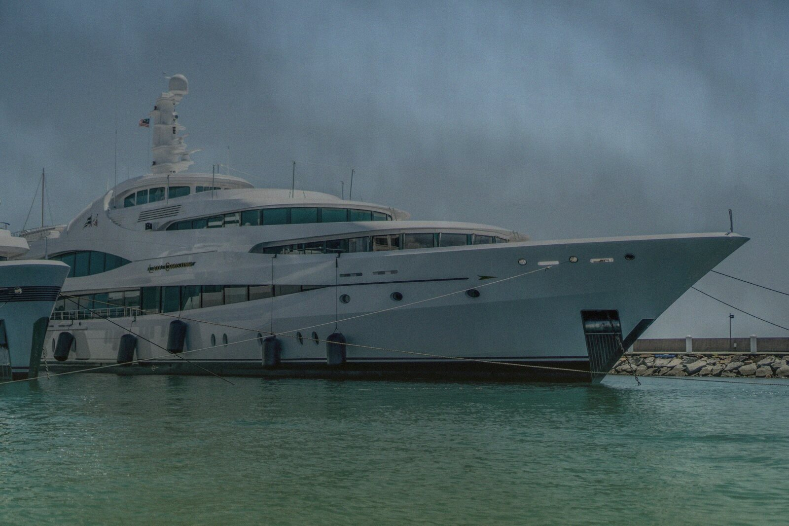
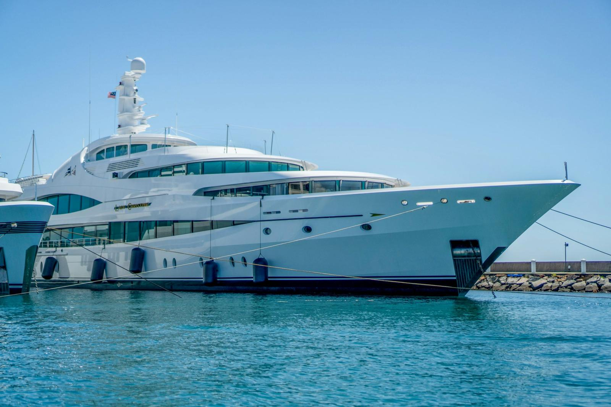
Dış yıkama, polisaj, teak ve iç detay. Hafta sonu geldiğinde tekne hazır, anahtarı alıp açılırsın.
Tuz ve güneş her hafta biraz daha mat eder. Biz düzenli aralıklarla marinaya geliyor, tekneyi yıkıyor, koruyor, parlatıyoruz. Sen sadece anahtarı alıp denize açılıyorsun.
Çubuğu kaydır. Aynı tekne, aynı açı.
Basınçlı tatlı su, tuz arındırma, teak ve krom. Kaydırdıkça kir gider.
Marinada, teknenin yanında. Kendi ekipmanımızla geliriz.
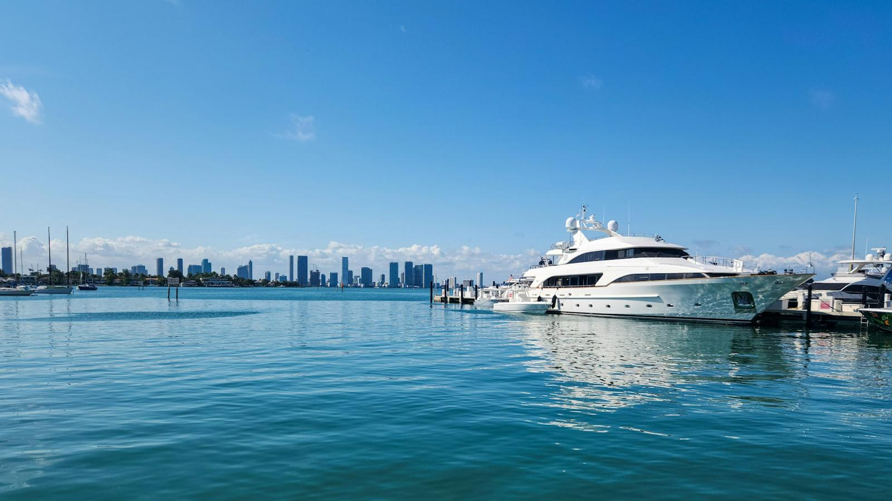
Basınçlı tatlı su yıkama, tuz arındırma, güverte ve gövde koruma cilası.
Randevu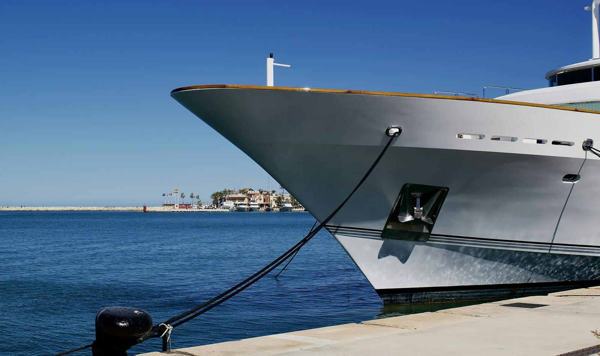
Oksidasyon giderme, pasta-cila, seramik koruma. Eski parlaklık geri gelir.
Randevu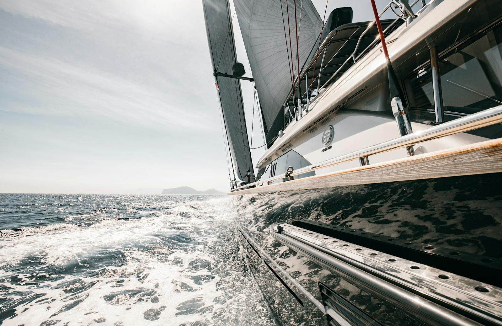
Temizlik, açma, yağlama ve koruma. Güverte gri değil, bal rengi.
Randevu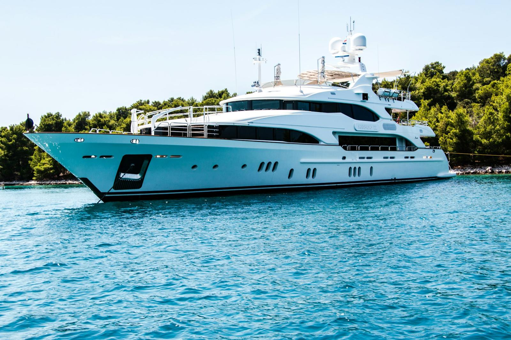
Kabin, döşeme, halı, banyo ve mutfak; koku ve küf giderme.
Randevu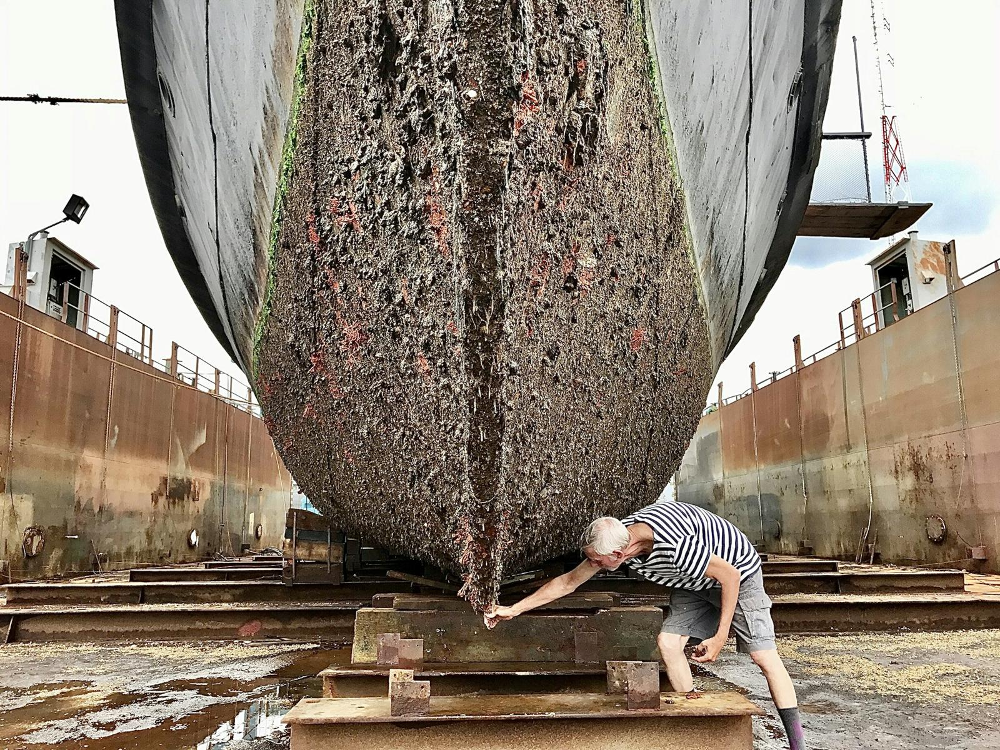
Su altı yosun ve kabuk temizliği. Kışlama ve antifouling için Boat Garage.
Boat GarageSezon boyunca ne sıklıkla geliyoruz? Üç düzen, hepsi marinada yerinde.

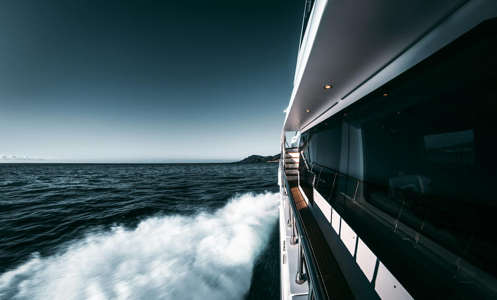
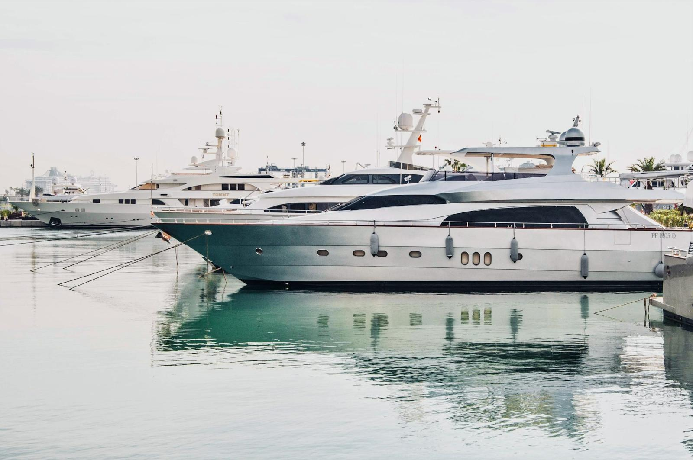
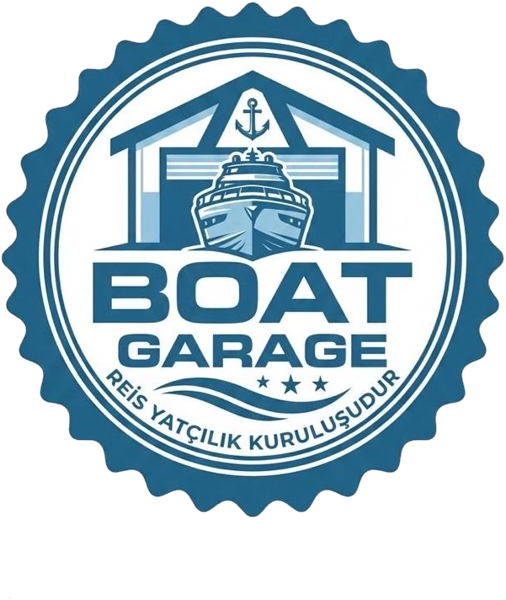
Kapalı garajda kendi yerin: kışlama, bakım ve ilkbaharda polisajlı teslim.
Tekne boyunu ve hangi marinada olduğunu yaz; aynı gün fiyat ve uygun tarihle dönelim.
+90 541 161 02 05